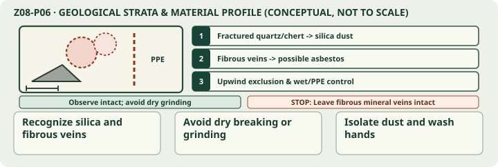

Z08-P06 · Rocks, minerals and materials · New manuscript
Respirable Crystalline Silica and Fibrous Mineral Stop Rules
Prevent irreversible lung injury from crystalline silica dust and naturally occurring asbestiform mineral fibers during material observation or instruction.
When it applies · Any encounter with quartz-bearing stone, sandstone, iron-formation rock, or fibrous mineral veins.
Equipment · Camera or notebook for non-contact observation. A specialist selects controls and protective equipment for authorized work.

Actions
- Avoid dry grinding, crushing, sanding, or hammering quartz, chert, sandstone, or granite because fracturing silica generates hazardous respirable crystalline silica dust.[R06]
- Leave fibrous, silky, splintery, or matted mineral veins completely undisturbed because field sight cannot separate harmless fibers from regulated asbestos.[R07]
- Step away from dust-producing work. Visibility and wind cannot establish exposure control. Use a non-disturbing observation route.[R06, R07]
Failure recognition · Working stone dry without respiratory protection or disturbing fibrous iron-formation veins exposes lungs to cumulative fibrotic and carcinogenic hazards.[R06, R07]
Verify · No dry stone abrasion occurs in field exercises and all fibrous mineral outcrops remain untouched and noted as hazard exclusions.[R06, R07]
Stop or change course · Stop any unassessed work that may generate dust. Do not disturb suspected fibrous material.[R06, R07]
Evidence and editorial notes
- R06 · NIOSH / CDC · Crystalline Silica Respiratory Dust Hazards (2024)
- Section: Overview; Exposure · Conditions: Silica-bearing material disturbed by cutting, grinding, or similar dust-producing work
Support: Respirable crystalline silica exposure can cause silicosis and other disease. Avoid creating dust during field recognition.
Limitations: Hazardous particles may be invisible. Wind, casual wetting and a mask alone do not establish exposure control. · Conflicting evidence: Conditions are recorded in the A03 audit.
Editorial note: Mandatory Z08 silica/eye safety gate. · Specialist reviewer: Industrial hygienist and geologist
Primary source · checked 2026-11-25 - R07 · U.S. EPA · Learn About Asbestos and Naturally Occurring Mineral Fibers (2025)
- Section: Naturally occurring asbestos and fibrous minerals · Conditions: Outcrops, fibrous veins, serpentinite, and iron-formation rock
Support: Naturally occurring asbestiform mineral fibers pose severe inhalation risks if disturbed, broken, or abraded.
Limitations: Field sight alone cannot distinguish benign fibrous minerals from regulated asbestos; leave fibrous mineral veins undisturbed. · Conflicting evidence: None noted.
Editorial note: Mandatory Z08 mineral-fiber stop rule. · Specialist reviewer: Industrial hygienist and mineralogist
Primary source · checked 2026-11-25
Source lineage · New manuscript (Z08 P16 dust and toxicity) · Classification · New manuscript.